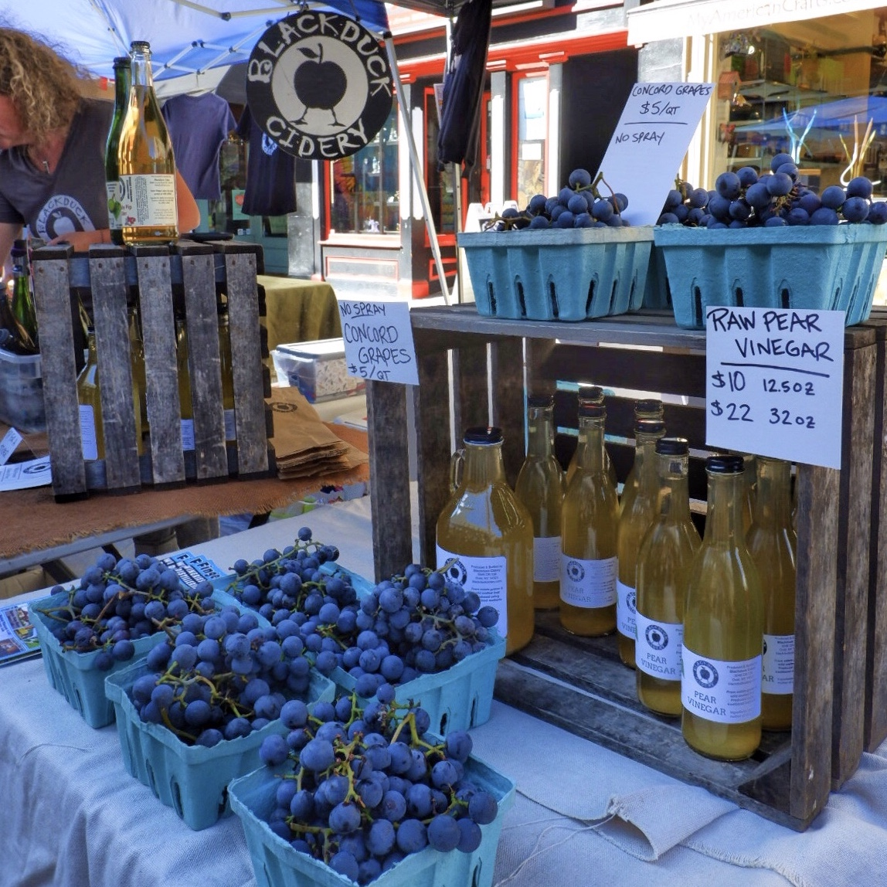
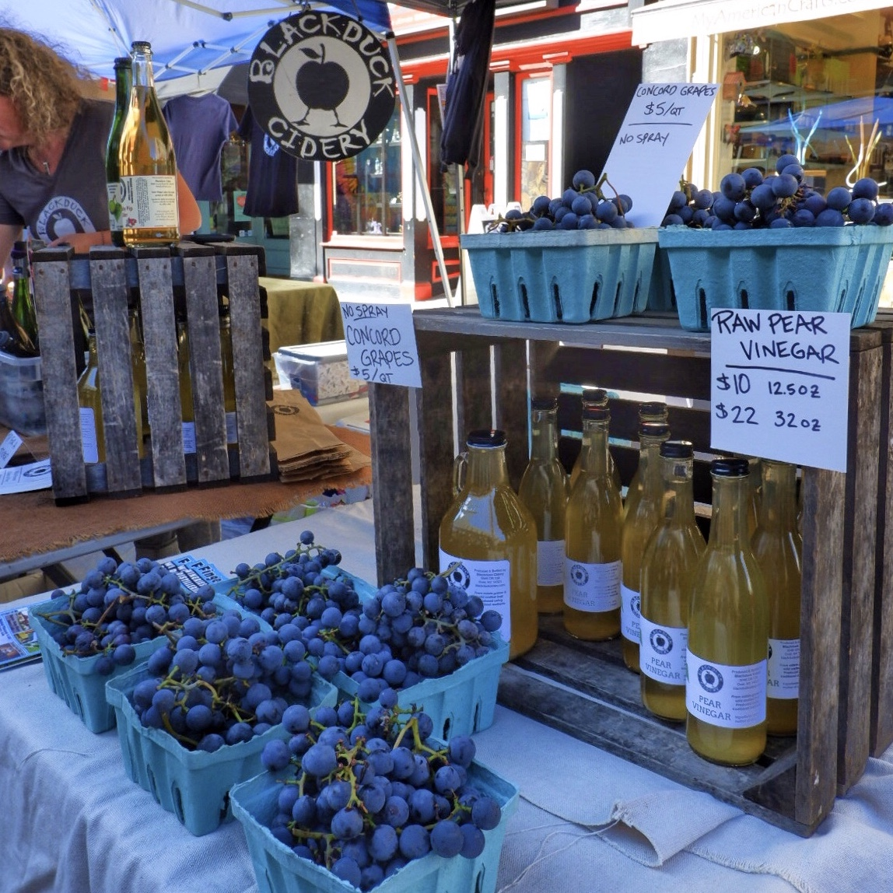
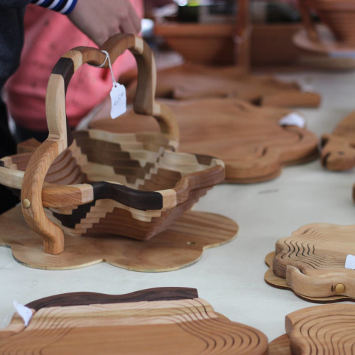
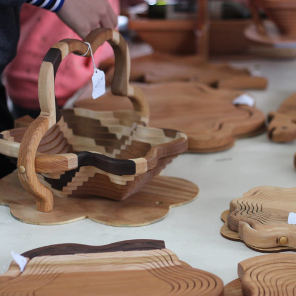

Welcome to the Apple Harvest Festival
Apple Harvest Festival will host plenty of farmstand fresh apples and produce, delectable apple and seasonal baked goods, a variety of food trucks offering tasty bites, and a craft fair with artisans from around the region. There will also be live music and entertainment, plus a cider trail to enjoy refreshing cider in store and plenty of great apple and apples-inspired products for sale inside shops in and around Downtown.
40th Annual Apple Harvest Festival
History of the Festival
Since 1982, the Ithaca Apple Harvest Festival hosts apples, baked goods, family entertainment, games, prizes, live entertainment and more. Over 100 talented artists, crafters, bakers, and makers come together for the Apple Harvest Craft Fair! Find creative, unique works from clothing to woodworking, ceramics to paintings, fudge to essential oils and beyond throughout the festival. The festival is held in the Ithaca Commons, a few streets that are full of restaurants and shops.
We are excited to welcome you back to one of Ithaca’s most celebrated events: the Apple Harvest Festival! Join us for three days of farm-fresh bites, local crafts, live music, and fall activities for all ages.
This annual festival marks the beginning of the fall harvest season, and features local apples and the Finger Lakes food, craft, and entertainment community! The weekend's happenings gives Ithaca residents, students, and visitors an opportunity to interact with small businesses and creators in the area. Welcome fall with us by visiting one of Ithaca's most famous events!
Times, Dates, and Location
- Festival Dates: September 30-October 2
- Festival Location: Located on the Ithaca Commons
Festival Hours
- Friday, September 30: 12pm - 6pm
- Saturday, October 1: 10am - 6pm
- Sunday, October 2: 10am - 6pm
Entertainment
Located at the Bernie Milton Pavilion

Saturday, October 1, 2022
- 12:00pm - Rachel Beverly
- 1:00pm - Sunny Weather
- 2:00pm - Firefly Jazz Quartet
- 3:00pm - Janet Batch
- 4:00pm - Leo + The Maydays
- 5:00pm - Neo Project
Sunday, October 2, 2022
- 12:00pm - Ageless Jazz Band
- 1:00pm - Yamatai
- 1:30pm - Fall Creek Brass Band
- 3:00pm - Viva Mayhem
- 4:00pm - Noon Fifteen
- 5:00pm - Ariel Arbisser
Vendors
With over 100 vendors present at the festival, there are many opportunities to be introduced to the rich artisan and culinary community in Ithaca. Our food vendors feature apple-centric and other fall classics for you to taste, and the craft vendors offer homemade goods like soaps, jewelry, sculptures, clothing, and more! This is the perfect place to learn about and support Ithaca's small businesses that encompass the heart of the town.
Farm Fresh Apples & Produce

- Schweigarts Sugar Shack
- Schoolyard Sugarbush
- A J Teeterfarm
- Littletree Orchards
- Creamcycle
- Maple River Syrup Company
- MacDonald Farms
- Cornell Society of Horticulture
- Laughing Goat Fiber Farm
- Robbie’s Produce
- Picaflor Farm
- Little Farm Bakery
- Little Grey Bakery
- Mojo Hot Sauce
 

Cider Houses & Wineries

- Blackduck Cidery
- Redbyrd Orchard
- South Hill Cider
- New Leaf Cider Co.
- Thousand Islands Winery
- Finger Lakes Cider House
- New York Cider Company
- Eve's Cidery
- Ashley Lynn Winery
Food Vendors

- Macarollin
- Mr. Squeeze Lemonade
- Kettle Corn Shoppe
- SPM Empanadas
- Fittnell Barbeque
- Tibetan Momo Bar
- Travelers Kitchen
- Asempe Kitchen
- Vail Bros inc
- On The Street Pitas
- Silo Food Truck
- B&B Kettle Korn
- Robbie’s Produce
- PDRS Catering
- Trini Style
- Coltivare
- She Messy Tacos
- Adam Grill
- Thai Basil
- Zocalo
- Yxi's Arepas & Gordito
- Solaz
- Monks on the Commons
- Smash Bros World Foods
- The Yellow Deli
- Thai Palace
- Lou's Covert Kitchen
- Playland Amusements Concessions

Crafters
- A&K Creations
- Alchemist's Whim
- All Forked Up Art
- Anna Pausch Studios
- Art Of Yen Ospina
- Ashley Messana Jewelry
- Bags That Bite
- Black Rabbit Studio
- Blue Toucan Studios
- Fairy Doors
- Bon Fire Craft
- CHOP SHOP STORE
- CM Goodenbury Photography
- Crescent Moon studio
- Daisy Hollow Farm
- Dale Bowers Art
- Dan Bingham Art
- Dave’s Art Den
- Dear Elaan jewelry
- DMK Naturals
- dna jewelry designs
- Elizabeth Lassing Jewelry
- FIRST-N-TEN
- For Claudia’s sayke
- Goldenhandsdesign
- Hooked Productions
- Interstellar Love Craft
- Jake’s Jammin Bow Ties
- Jazz House Designs
- Julie Draws
- Kingsley Street Artisan Soaps
- Knittin Caboodle
- Kom Life
- Lakeland Winery
- Laurel O'Brien Jewelry
- Leather & Lace
- Libby Balm.
- Marika Chew Watercolor Paintings
- May and Mary
- Mayor Potencial
- 501C3
- Metal Magic
- Morning Mist Farms Soaps & Sundries
- MV CERAMICS
- Natalie Rae NY
- Pair'adox Dice
- Pam Gifford Pottery
- Pickled Punks
- Pm Press
- potsbydjr
- Puccoon Raccoon
- Queen City Basement Designs
- Rachel Feirman
- Ragtrader Vintage
- Rose Gottlieb Art & Jewelry
- SamHain's Delights
- Saratoga Peanut Butter Company
- Southwest Expressions
- Spirited servers
- Suede Sauce Company
- Sunny Days of Ithaca
- Sunshine's Creative Designs
- Tess Zizak Arts
- The Hair Jeweler
- The Pearl & Stone
- Via's Cookies
- Water of Whimsy
- Wildflower Beads
- Youth Entrepreneurship Market
- Your CBD Store
- and more!
 

FAQ
- How much money should I bring?
- Entry to the event is completely free! The amount of money you should bring is dependent on what, if anything, you wish to purchase at the festival. If you are driving, there is a $5 charge to park at the parking garage (You can find more parking information here ). If you plan to eat at the festival, you may also wish to bring at least $10. Prices of the various baked goods, produce, and crafts vary by vendor. Many of our vendors and their items can be found here.
- Can I pay with a credit card?
- Most of our vendors accept credit cards, however, you should bring some cash in case a shop you are interested in does not accept them.
- Can I bring my dog?
- Bringing a dog is strongly discouraged due to pets not being allowed on the Commons. Additionally, the event will be crowded and may be overwhelming for your furry friend, or it may be difficult to move through the crowds. Registered service animals are permitted.
- What should I wear?
- If you are not familiar with the Ithaca area, it can get quite cold in the fall! Check the weather and bring layers.
- When is the best time to attend?
- If you are looking to avoid the crowds, attending midday Friday is a good idea. However, many attendees find that the crowds on the weekend add to the energy and fun of the festival.
- Will there be alcohol?
- Some vendors do sell alcohol (such as hard cider), so be sure to bring your ID if you are over 21. Many of these vendors also offer tastings.